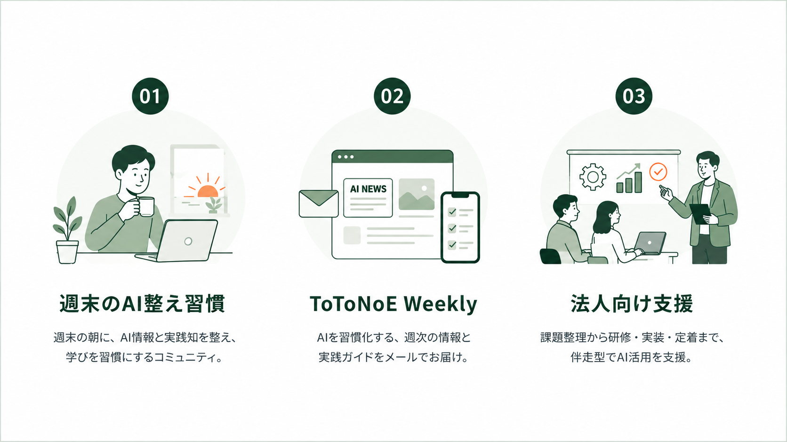

FREE
FREE
週末のAI整え習慣
習慣を整える。毎週土曜の朝30分。AIの重要な変化を一緒に知り、自分の仕事や現場に置き換え、次の一歩を考える無料の学習習慣です。
詳しく見る →SERVICE
ToToNoE+は、AIを使うことそのものを目的にしていません。情報を整える。習慣を整える。仕事を整える。本質ではないことを減らし、生まれた余白を、本当に大切にしたいことへ戻していく。個人の学びから、組織の業務改善まで。それぞれに合った「整える」を支援します。
OVERVIEW

START POINT
FREE
毎週土曜の朝30分。AIの重要な変化を一緒に知り、自分の仕事や現場に置き換え、次の一歩を考える無料の学習習慣です。
詳しく見る → PERSONAL / TEAM
PERSONAL / TEAM
毎日AIニュースを追わなくても、知っておきたい変化を毎週整理して受け取れる有料AI情報サービスです。
ToToNoE Weeklyを見る → ORGANIZATION
ORGANIZATION
AIを入れることからではなく、現場の課題を知ることから始めます。業務診断、研修、業務改善・実装、継続伴走を通じて、専門職が本質に向き合える状態をつくります。
法人向け支援を見る →FREE / LEARNING
AI情報をただ知って終わるのではなく、知る → 整える → 置き換える → 試すを週末の30分で行う無料の学習習慣です。
医療・介護と産業保健、それぞれの現場にAIをどう活かせるのかを考えます。
週末のAI整え習慣について詳しく見る →
PAID / AI INFORMATION
毎週生まれるAIの変化から、専門職が知っておきたい情報をToToNoE+が整理します。単なるニュース一覧ではなく、実務に置き換えられるところまで届けます。
個人プラン 月980円（税込） ／ 法人プラン 人数規模に応じて
ToToNoE Weeklyについて詳しく見る →ORGANIZATION
ToToNoE+では、技術から始めません。現場 → 課題 → 必要な技術の順番で考えます。
現場にある本質ではない仕事を見つけ、小さく改善し、効果を確認しながら、自分たちで整えられる状態まで支援します。
法人向け支援の詳細を見る →
BRAND VALUE

効率化で終わらない。生まれた余白を、価値へ変える。